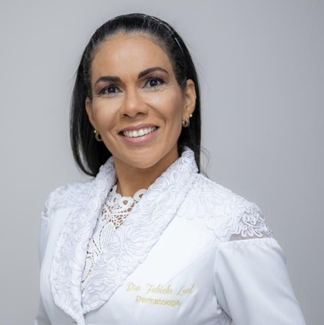

Retirada da lesão
Em geral com anestesia local, a lesão é retirada com uma fina margem de pele ao redor.
Dermatologista · CRM-BA 14578 · RQE 7273
A Dra. Fabíola Leal é dermatologista formada pela UFBA, com fellowship em cirurgia micrográfica de Mohs em São Paulo. Na técnica de Mohs, as margens do tumor são examinadas ao microscópio durante a própria cirurgia.

Por onde começar
Os tipos mais comuns, os sinais de alerta e por que a biópsia vem antes.
Câncer de peleIndicaçãoComo a técnica funciona, camada por camada, e para quais casos costuma ser indicada.
Cirurgia de MohsPlanejamentoO que acontece antes, durante e depois, e por que o procedimento pode levar algumas horas.
Preparo e recuperaçãoOutros cuidadosBiópsia e cirurgia das unhas, e o tratamento clínico e cirúrgico da hidradenite.
Unhas e hidradeniteCirurgia micrográfica de Mohs
Na cirurgia de Mohs, cada camada retirada é analisada ao microscópio antes de a cirurgia terminar. Assim, a pele só é removida onde ainda há tumor.
Em geral com anestesia local, a lesão é retirada com uma fina margem de pele ao redor.
O fragmento é marcado e mapeado, para saber exatamente de onde veio cada parte da margem.
As margens são examinadas em cortes horizontais durante o procedimento, enquanto o paciente aguarda.
Se ainda houver tumor, uma nova camada é retirada apenas naquele ponto. Com as margens livres, vem a reconstrução.
Para quais casos
A cirurgia de Mohs costuma ser indicada para carcinomas basocelulares e espinocelulares em áreas delicadas, para tumores que voltaram e para lesões de limites pouco nítidos. A indicação é sempre individual.
Depois das margens livres
Retirado o tumor, a ferida é fechada da forma mais adequada para a área e o tamanho do defeito. A técnica é discutida com o paciente.
Além do câncer de pele
Manchas escuras, deformidades e alterações persistentes pedem avaliação. A biópsia de unha exige precisão, por causa da anatomia da unha.
Do tratamento clínico, com imunobiológicos quando indicados, à cirurgia dos túneis e cicatrizes nos casos moderados a graves.
Nas palavras dela
“Meu compromisso é unir conhecimento técnico, ética e empatia para cuidar da saúde da pele e melhorar a qualidade de vida de cada paciente.”
Dra. Fabíola Leal
Respostas da Dra. Fabíola a avaliações de pacientes no Doctoralia.
Formação
Avaliações públicas
Desde o diagnóstico até o pós-operatório, fui conduzido com precisão científica, sensibilidade clínica e um raro senso estético.
Excelente profissional, atenciosa, extremamente competente, segura; explica tudo baseada nas evidências científicas mais atuais.
Mostrou domínio do assunto e me tranquilizou. Consulta sem pressa.
Médica muito atenciosa! Explicou bem o meu caso, tirou as minhas dúvidas e conversou sobre a melhor maneira de tratamento. Examinou o corpo todo.
Levei minha mãe em uma consulta com ela para avaliação de um CA de pele, ela foi incrível, inclusive nas explicações, pois minha mãe estava bastante nervosa.
Atendimento de excelência na consulta inicial, detalhado o procedimento que seria realizado. Passou segurança nas informações. […] Agendou de imediato data para fazer o curativo e data para retirada dos pontos.
Fui muito bem assistido durante todo o processo, desde o pré até o pós-operatório. A Dra. Fabíola demonstrou extrema competência e cuidado, assim como toda sua equipe.
Agradeço imensamente pelo atendimento atencioso. É raro encontrar médicos com tanta empatia. E muito segura no que fala.
Muito pontual, fui muito bem acolhida, desde a chegada, estacionamento, portaria, a recepção excelente, e Dra. Fabíola, pontualíssima, e excelente profissional, criteriosa.
A médica realizou ótimo atendimento, me senti bem acolhida.
Onde atendo
Rua Waldemar Falcão, 979, sala 404 · Horto Office · Salvador · 40295-010
Como chegarRua da Alfazema, 761, sala 302 · Iguatemi Business e Flat · Salvador · 41820-710
Como chegarRua Ponciano Oliveira, 157 · Ed. Garibaldi Empresarial · Salvador
Como chegarAtendimento com hora marcada. O WhatsApp é o mesmo para os três endereços.
Dúvidas frequentes
Não. A cirurgia de Mohs é indicada para alguns casos específicos, levando em conta o tipo de tumor, o local e o tamanho. A indicação é feita em consulta, depois da avaliação da lesão.
Na cirurgia de Mohs, as margens são examinadas ao microscópio durante o procedimento, em cortes que mostram toda a margem da peça. Se ainda houver tumor, uma nova camada é retirada só naquele ponto.
No HCI Consultórios Médicos, no Horto Florestal; no Visagé Consultório, no Caminho das Árvores; e no Centro Médico Cárdio Pulmonar, no Rio Vermelho.
Depende do local. Confirme com a equipe pelo WhatsApp antes de marcar.
Sim. A Dra. Fabíola atende adultos e crianças de qualquer idade, inclusive em cirurgias de unha.
Três consultórios em Salvador, com hora marcada.